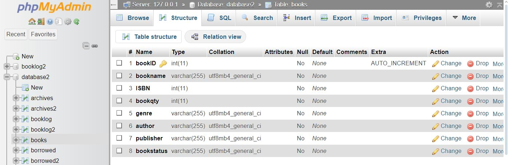
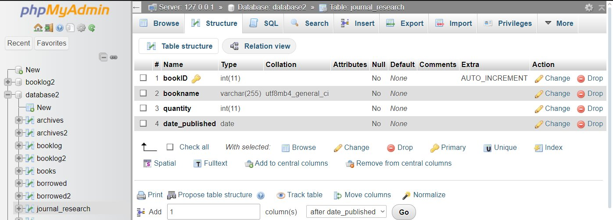
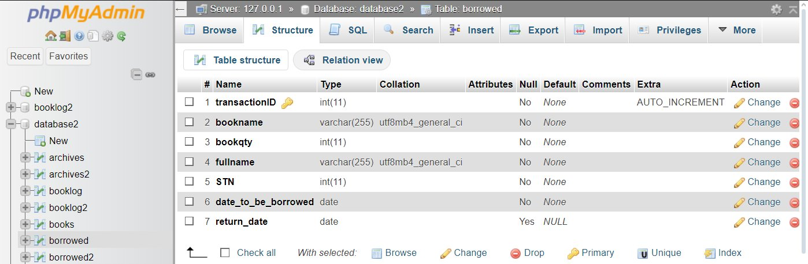
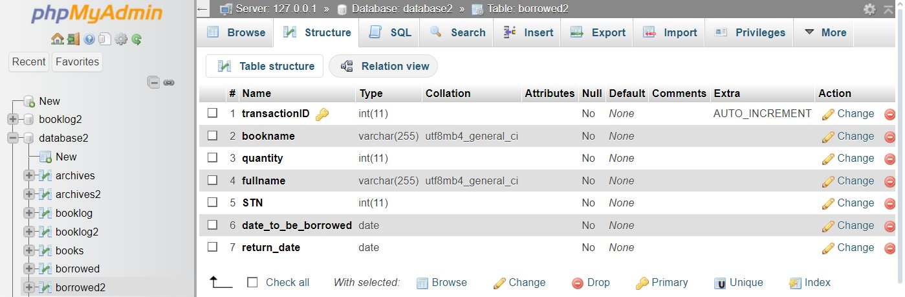
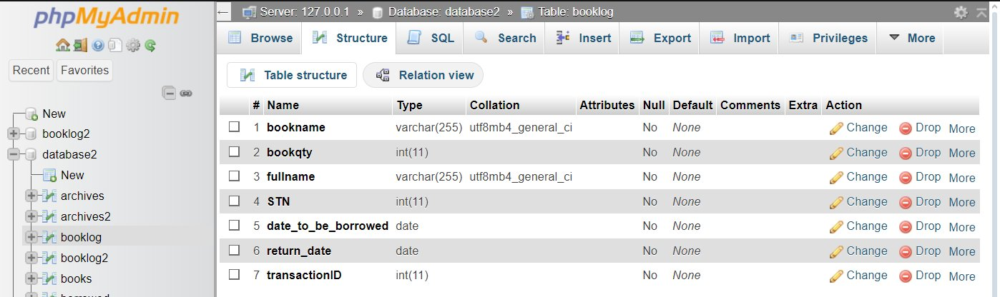
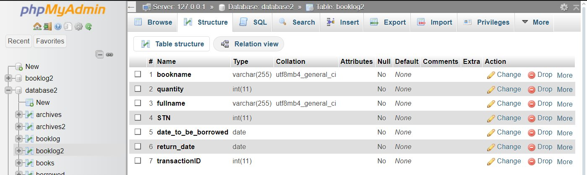
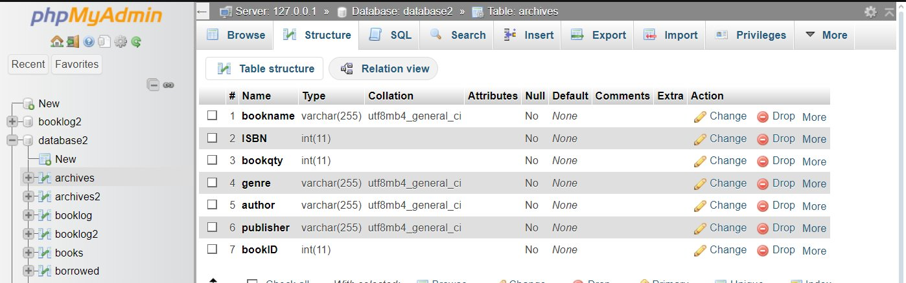
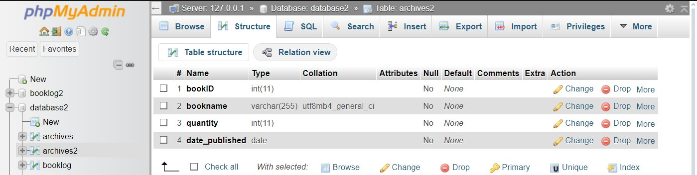

Return booksjournals & research
Enter your details to see what you currently have on loan.
Enter your details to see what you currently have on loan.
Portfolio demo
The original Library Management System for Systems Plus Computer College was built with PHP 8 and a MariaDB / MySQL database, and ran on a XAMPP server. To let you try it here without a server, I converted it to plain HTML, CSS and JavaScript.
20230001 and the name Maria Santos to see existing loans.admin, password admin1234.Screenshots of the original MySQL tables (phpMyAdmin).







